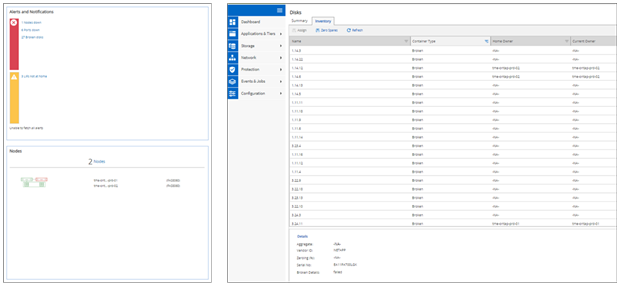

请求文档变更
请求文档变更 在 GitHub 上编辑
在 GitHub 上编辑 提供者指南
提供者指南简化增强功能
提供者
本节介绍可提高精简性的 ONTAP 9.8 增强功能。其中包括：
-
ONTAP System Manager 更新
-
ONTAP 升级和技术更新改进
-
REST API 增强功能
System Manager 增强功能
ONTAP 9.7 对 System Manager 图形用户界面进行了改进，旨在简化管理员管理 ONTAP 基本操作（例如存储配置和日常操作）的方式。新的 GUI 还利用了 ONTAP 9.6 中添加的 REST API 。在 ONTAP 9.8 中，已删除 System Manager 经典视图。
界面之间的一个主要区别是信息板，这是您首次登录到 NetApp ONTAP System Manager 时访问的第一个页面。
下图显示了经典版本和新版 System Manager 信息板的并排比较。

如果我们仔细观察，可以看到一些主要差异。
运行状况 / 警报
首次登录到经典 System Manager 时，左上角会列出集群和节点故障。这些内容将总结为可单击的链接。单击其中一个链接后，您将重定向到 System Manager 中的另一个页面。
此外，您还可以通过一个单独的区域来显示集群 HA 状态，以查看节点是否已进行故障转移。在下图中，我们会看到信息板视图以及单击其中一个链接时看到的内容―在本例中为故障磁盘。

要查看其他警报，您必须导航回信息板，这需要时间和额外的单击操作。新 System Manager 视图的目标之一是简化此过程。
下图显示了新的 System Manager 信息板。运行状况视图和警报视图的两个主要区别是，节点 HA 状态和警报现在位于同一窗口中，而不是从主信息板中单击，而是显示在一个下拉框中。

容量视图
容量视图的额外单击次数也会减少。在经典的 ONTAP System Manager 中，容量和存储效率比率可在集群概述下找到，并可通过单击选项卡来查找信息。新的 System Manager 视图将存储效率比率和容量视图整合到一个图形中。

|
新 UI 可利用已用逻辑空间和物理可用空间。 |

数据保护视图已移至其自己的信息板中的保护下。此页面提供了对集群中数据保护的更深入，更精细的了解，还提供了利用新 SnapMirror 业务连续性（ SM-BC ）的位置。

网络可视化
此外， ONTAP System Manager 9.8 还会删除应用程序和对象视图，以便使用新的网络可视化视图显示集群的网络拓扑，并在端口关闭时删除红色 X 。

性能视图
现在， System Manager 中的性能数据图可保留长达 1 年的集群数据，而不是让传统 System Manager 性能数据仅在您登录时可用。在 ONTAP System Manager 9.8 中，您现在可以单击小时，天，周，月或年。此外，还可以将性能数据下载到 CSV 。

文件系统分析
在高文件数环境中，要查找有关文件夹容量，数据使用期限和文件计数的信息，通常需要使用时间密集型命令或脚本通过 NAS 协议运行串行操作，例如 ls ， du ， find 和 stat 。
通过 ONTAP System Manager 9.8 ，管理员可以通过为每个卷启用低影响扫描程序，快速轻松地查找任何 NAS 存储卷中的文件系统信息。此扫描程序会在后台以低优先级作业搜索 ONTAP 文件系统，并在导航到 System Manager 9.8 或更高版本中的卷时提供大量信息。
启用文件系统分析就像导航到要扫描的卷一样简单。转到 " 存储 ">" 卷 " ，然后使用搜索功能查找所需的卷。单击卷，然后单击资源管理器选项卡。
在此处，您将看到页面右侧的 "Enable Analytics" 链接。

单击启用后，扫描程序将启动。完成时间取决于卷中的对象数量以及系统负载。完成后，您会看到 System Manager 视图中填充了整个目录结构。此视图可在目录树下导航，并可用于访问历史记录信息，目录大小信息和文件大小。
下图显示了集群中 Tech_ONTAP 卷的视图，此卷用作的归档 "NetApp Tech OnTap 播客集"。

单击某个文件夹时，页面右侧将显示一个文件列表。

如果选择，您可以启用显示访问时间来查看上次访问文件的时间。

在页面底部，您可以看到一年内未访问的数据量，以及该文件夹中的目录和文件计数。

除了能够快速查找文件大小和目录信息之外，此功能还提供了一些信息，可帮助您确定 NetApp FabricPool 技术是否能够有效地减少占用聚合空间的冷数据量。
活动 NFS 客户端
ONTAP 9.7 提供了一种查看哪些 NFS 客户端正在访问集群中的特定卷的方法，以及在 nfs connect-clients 命令中使用了哪些数据 LIF IP 地址。中详细介绍了此命令 "TR-4067 ：《 NetApp ONTAP NFS 最佳实践和实施指南》"。如果您需要了解哪些客户端已连接到存储系统，例如升级，技术更新或简单报告，则此命令非常有用。
ONTAP System Manager 9.8 提供了一种通过 GUI 查看这些客户端的方法，以及一种将列表导出到 .csv 文件的方法。导航到主机 > NFS 客户端，此时将显示过去 48 小时处于活动状态的 NFS 客户端列表。

其他 System Manager 9.8 增强功能
ONTAP 9.8 还为 System Manager 提供了以下增强功能：
|
|
下图显示了 MetroCluster 和一键式固件更新。

REST API 增强功能
ONTAP 9.6 中增加了 REST API 支持，存储管理员可以利用其自动化脚本中对 ONTAP 存储的行业标准 API 调用，而无需与命令行界面或图形用户界面进行交互。
System Manager 提供了 REST API 文档和示例。只需从 Web 浏览器导航到集群管理界面，然后将 dOC/API 添加到该地址（使用 HTTPS ）即可。
例如：
此页面提供了可用 REST API 的交互式术语表，以及一种生成您自己的 REST API 查询的方法。

现在，在 ONTAP 9.8 中， REST API 会使用添加的版本进行标注，这有助于在您尝试使脚本在多个 ONTAP 版本之间运行时简化使用过程。

下表列出了 ONTAP 9.8 中的新 REST API 。
|
* 安全性 * * FIPS 模式启用 / 禁用 * 数据加密启用 / 禁用 * Azure 密钥存储 * Google GCP-KMS * IP 安全 * 存储 * * 文件复制 / 移动 * NetApp FlexCache ® 修补程序 / 修改 * 监控的文件 * Snapshot 策略 * 存储效率策略 * 文件和目录管理（异步删除， QoS 和文件系统分析） * NAS* * 审核日志重定向 * CIFS 会话 * 文件访问跟踪 / 安全跟踪 * 管理 * * 事件修复 * 对象存储 /S3* S3 存储分段管理 * S3 组 * S3 策略 |
有关 ONTAP 9.8 中 System Manager 更新的详细信息，请参见 "Tech OnTap 播客第 266 集： NetApp ONTAP System Manager 9.8"。
升级和技术更新增强功能— ONTAP 9.8
以往， ONTAP 升级必须在一个或两个主要版本中进行，才能无中断地运行。对于不经常升级的存储管理员来说，当最终升级 ONTAP 时，这将成为一个重大的头痛和后勤噩梦。谁想在维护时段多次升级和重新启动？
现在， ONTAP 9.8 支持在两年内升级到 ONTAP 版本。这意味着，如果要从 9.6 升级到 9.8 ，您可以直接执行此操作，而无需转到 ONTAP 9.7 。
下表提供了 NetApp ONTAP 版本升级的列表。
| 起点 | 直接升级到： |
|---|---|
ONTAP 9.6 |
ONTAP 9.7 ， ONTAP 9.8 |
ONTAP 9.7 |
ONTAP 9.8 ， ONTAP 9.n+2 |
ONTAP 9.8 |
ONTAP 9.n+1 ， ONTAP 9.n+2 |
这一简化的升级过程还为简化机头升级提供了一种方法。在发售新硬件节点时，此节点已安装最新的 ONTAP 版本。以前，如果现有集群运行的是旧版 ONTAP ，则必须将现有节点升级到与新节点相同的 ONTAP 版本，或者将新节点降级到旧版 ONTAP 。此外，更复杂的是，如果无法降级较新的硬件，则您必须通过维护窗口升级现有集群。
借助 ONTAP 9.8 的 2 年混合版本窗口，您现在可以将运行较新 ONTAP 版本的新节点添加到集群中，以便通过将卷从运行 9.8 的节点移动到更高版本的 ONTAP 来刷新控制器。此外，通过无中断聚合重新定位升级过程，可以将必须运行 ONTAP 9.8 的系统（例如， 8000 系列系统）的控制器升级到更高版本的 ONTAP 中引入的新型号。
建议您限制 ONTAP 集群在混合版本状态下运行的时间。

此过程还会扩展到集群升级，在此升级中，您需要从集群交换整个 HA 对。借助 ONTAP 9.8 2 年修订期和无中断卷移动，现在便可实现这一点。
基本步骤如下：
-
将新系统连接到现有集群， ONTAP 版本将在 2 年期限内提供。
-
使用无中断卷移动功能清空节点。
-
从集群中取消旧节点的加入。